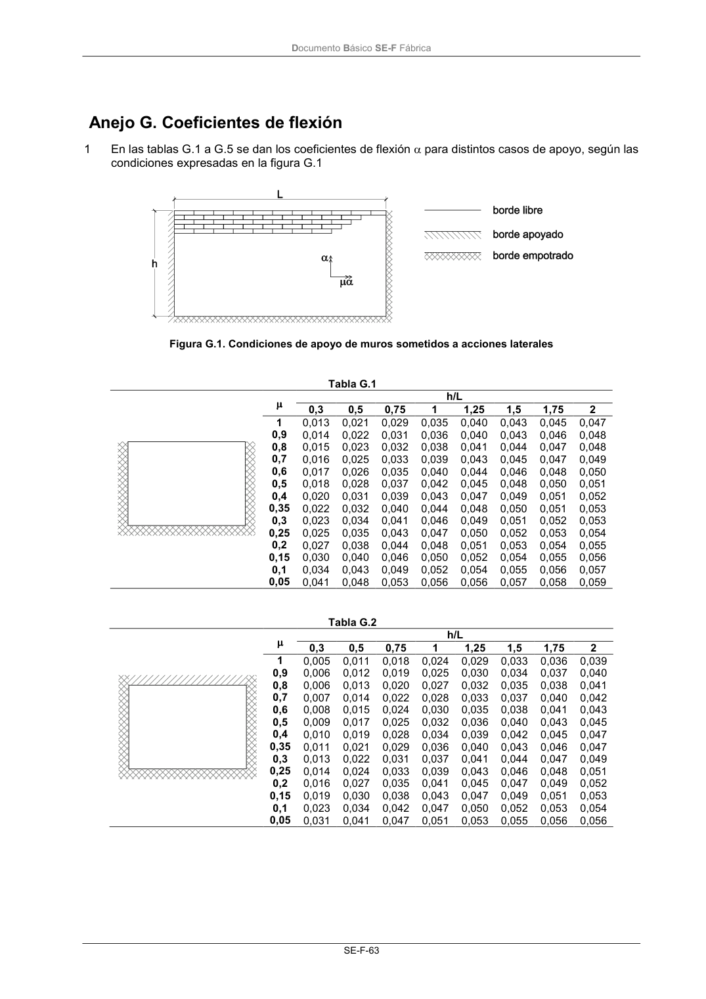

DB-SE-F Fábrica · edición 2019-12-20 · capa oficial
Documento DB-SE-F-oficial · SHA-256 del PDF e3e0805c3b4c307519c26dc34c3fdbf143d842edd013c91b0f52d2c73403d91c
Página física 67 de 70.
Copia fiel del PDF fuente · Fuente oficial
Ficha de la disposición en la fuente oficial
Formato: Texto de la página (Markdown)
Documento Básico SE-F Fábrica SE-F-63 Anejo G. Coeficientes de flexión 1 En las tablas G.1 a G.5 se dan los coeficientes de flexión para distintos casos de apoyo, según las condiciones expresadas en la figura G.1 Figura G.1. Condiciones de apoyo de muros sometidos a acciones laterales Tabla G.1 (D) h/L 0,3 0,5 0,75 1 1,25 1,5 1,75 2 1 0,013 0,021 0,029 0,035 0,040 0,043 0,045 0,047 0,9 0,014 0,022 0,031 0,036 0,040 0,043 0,046 0,048 0,8 0,015 0,023 0,032 0,038 0,041 0,044 0,047 0,048 0,7 0,016 0,025 0,033 0,039 0,043 0,045 0,047 0,049 0,6 0,017 0,026 0,035 0,040 0,044 0,046 0,048 0,050 0,5 0,018 0,028 0,037 0,042 0,045 0,048 0,050 0,051 0,4 0,020 0,031 0,039 0,043 0,047 0,049 0,051 0,052 0,35 0,022 0,032 0,040 0,044 0,048 0,050 0,051 0,053 0,3 0,023 0,034 0,041 0,046 0,049 0,051 0,052 0,053 0,25 0,025 0,035 0,043 0,047 0,050 0,052 0,053 0,054 0,2 0,027 0,038 0,044 0,048 0,051 0,053 0,054 0,055 0,15 0,030 0,040 0,046 0,050 0,052 0,054 0,055 0,056 0,1 0,034 0,043 0,049 0,052 0,054 0,055 0,056 0,057 0,05 0,041 0,048 0,053 0,056 0,056 0,057 0,058 0,059 Tabla G.2 (H) h/L 0,3 0,5 0,75 1 1,25 1,5 1,75 2 1 0,005 0,011 0,018 0,024 0,029 0,033 0,036 0,039 0,9 0,006 0,012 0,019 0,025 0,030 0,034 0,037 0,040 0,8 0,006 0,013 0,020 0,027 0,032 0,035 0,038 0,041 0,7 0,007 0,014 0,022 0,028 0,033 0,037 0,040 0,042 0,6 0,008 0,015 0,024 0,030 0,035 0,038 0,041 0,043 0,5 0,009 0,017 0,025 0,032 0,036 0,040 0,043 0,045 0,4 0,010 0,019 0,028 0,034 0,039 0,042 0,045 0,047 0,35 0,011 0,021 0,029 0,036 0,040 0,043 0,046 0,047 0,3 0,013 0,022 0,031 0,037 0,041 0,044 0,047 0,049 0,25 0,014 0,024 0,033 0,039 0,043 0,046 0,048 0,051 0,2 0,016 0,027 0,035 0,041 0,045 0,047 0,049 0,052 0,15 0,019 0,030 0,038 0,043 0,047 0,049 0,051 0,053 0,1 0,023 0,034 0,042 0,047 0,050 0,052 0,053 0,054 0,05 0,031 0,041 0,047 0,051 0,053 0,055 0,056 0,056
